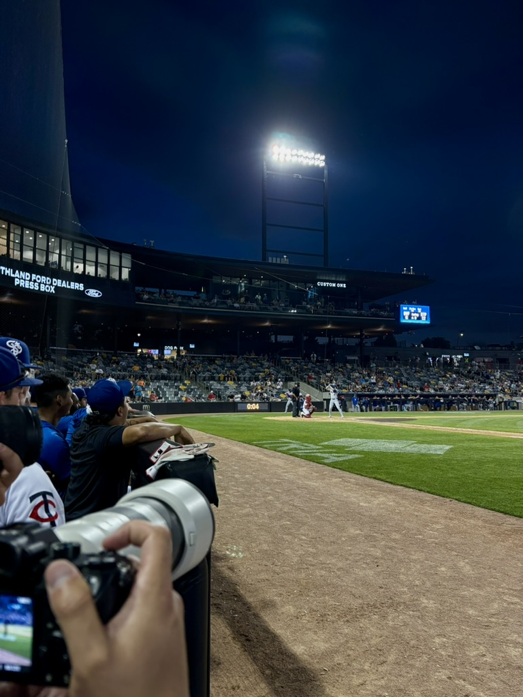
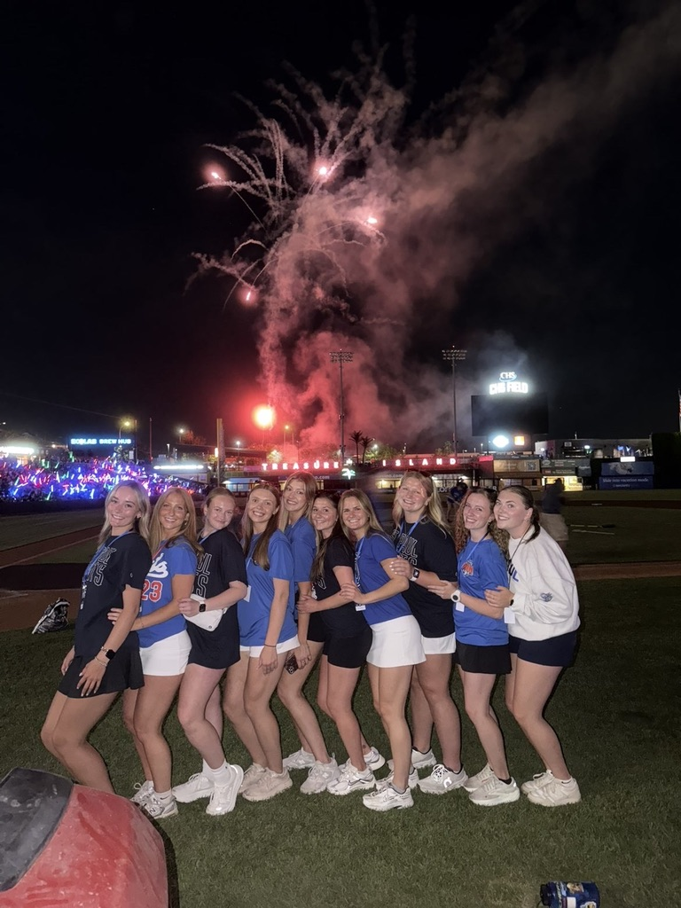

Hey! I’m Brianna Wille. I love staying active and spending time with the people I care about most. Some of my favorite things to do are going to the gym, hanging out with family and friends, being outdoors, and spending time boating in the summer.
A few fun facts about me: my favorite food is dark chocolate, and I absolutely love the color pink, which you can probably already tell!
Thanks for checking out my portfolio. I hope you enjoy exploring my work and getting to know me a little better!
My work explores the evolving world of digital marketing and visual communication, where graphic design and social media intersect with creativity and strategy. I am drawn to the way digital art shapes how people perceive brands, trends, and messages in everyday life. I aim to create visuals that are engaging, intentional, and emotionally resonant while balancing artistic expression with clear communication.

02
My Mediums
My creative practice spans digital illustration, photography, video, and graphic design. I enjoy experimenting with different styles and allowing each project to develop its own visual identity.
03
My Style
Much of my work leans toward futuristic and surreal aesthetics: bold, immersive, high-energy compositions with bright color palettes that capture attention. I also explore minimalist design, using clean lines and simplicity to communicate ideas in a more subtle, refined way.

04
Why It Matters
The meaning behind my work centers on connection and impact. Whether I am designing social media graphics, illustrations, branding materials, or digital campaigns, my goal is to create work that captures attention while delivering a clear message. Designing lets me blend visual storytelling and strategy to connect with audiences in meaningful ways.
Through my portfolio, I hope to showcase my versatility as a digital artist and my passion for creating thoughtful, engaging, and visually compelling design experiences.